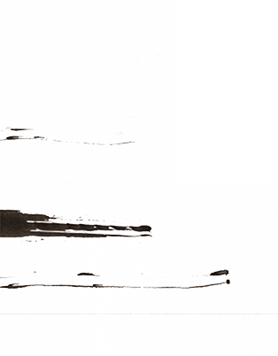

<!doctype html>
<!--[if lt IE 7]>      <html class="no-js lt-ie9 lt-ie8 lt-ie7" lang=""> <![endif]-->
<!--[if IE 7]>         <html class="no-js lt-ie9 lt-ie8" lang=""> <![endif]-->
<!--[if IE 8]>         <html class="no-js lt-ie9" lang=""> <![endif]-->
<!--[if gt IE 8]><!--> <html class="no-js" lang=""> <!--<![endif]-->
    <head>
        <meta charset="utf-8">
        <meta http-equiv="X-UA-Compatible" content="IE=edge,chrome=1">
        <title>роздІловІ · Про проект</title>
        <meta name="description" content="роздІловІ — це поетично-музично-візуальний проект від творчої агенції АртПоле. Текст і голос: Сергій Жадан, ідея та візуалізація: Оля Михайлюк, музика: Олексій Ворсоба і Влад Креймер.">
        <meta name="viewport" content="width=device-width, initial-scale=1">
        <link rel="apple-touch-icon" href="apple-touch-icon.png">

        <link rel="stylesheet" href="/css/normalize.min.css">
        <link rel="stylesheet" href="/css/common.css?v=1487868919">
        <link rel="stylesheet" href="/css/new-about.css?v=1487841119">

        <meta property="og:title" content="роздІловІ"/>
        <meta property="og:type" content="website"/>
        <meta property="og:url" content="http://rozdilovi.org/about-ua.html"/>
        <meta property="og:image" content="http://rozdilovi.org/img/og_image_about.jpg"/>
        <meta property="og:image:width" content="1200"/>
        <meta property="og:image:height" content="650"/>
        <meta property="fb:app_id" content="780216908756149"/>
        <meta property="og:site_name" content="роздІловІ"/>
        <meta property="og:description"
              content="роздІловІ — це поетично-музично-візуальний проект від творчої агенції АртПоле. Текст і голос: Сергій Жадан, ідея та візуалізація: Оля Михайлюк, музика: Олексій Ворсоба і Влад Креймер."/>

        <script src="/js/vendor/modernizr-3.3.1-custom-1.min.js"></script>

        <script>
          (function(i,s,o,g,r,a,m){i['GoogleAnalyticsObject']=r;i[r]=i[r]||function(){
          (i[r].q=i[r].q||[]).push(arguments)},i[r].l=1*new Date();a=s.createElement(o),
          m=s.getElementsByTagName(o)[0];a.async=1;a.src=g;m.parentNode.insertBefore(a,m)
          })(window,document,'script','//www.google-analytics.com/analytics.js','ga');

          ga('create', 'UA-68896024-1', 'auto');
          ga('send', 'pageview');
        </script>
    </head>
    <body>
        <!--[if lt IE 8]>
            <p class="browserupgrade">You are using an <strong>outdated</strong> browser. Please <a href="http://browsehappy.com/">upgrade your browser</a> to improve your experience.</p>
        <![endif]-->

        <div class="menu">
          
        </div>

        <div class="nav nav-hide">
            <div class="nav-content">
                <a href="/" class="nav-a">Головна</a>
                <a href="/album.html" class="nav-a">Аудіо-альбом</a>
                <a href="/lyrics.html" class="nav-a">Тексти</a>
                <!--<a href="/send-ecards.html" class="nav-a">Електронні листівки</a>-->
                <a href="/send-postcards.html" class="nav-a">Поштові листівки</a>
                <a href="/about-ua.html" class="nav-a">Про проект</a>
                <a href="/about.html" class="nav-a">Історія</a>
                <!--<a href="/2015.php" class="nav-a">Архів</a>-->
                <a href="/support-us.html" class="nav-a">Як долучитися</a>
            </div>
            <div class="nav-img-content">
                <a target="_blank" href="http://artpole.org/">
                    <div id="nav-artpole"></div>
                </a>
            </div>
        </div>

        <div class="lang">
            <a class="current" href="/">Укр</a>&nbsp;&nbsp;&nbsp;<a href="/about-de.html">De</a>&nbsp;&nbsp;<a href="/about-en.html">En</a>
        </div>

        <a id="tour" href="http://artpole.org/archive/2017/2017_rozdilovi_tour.html" target="_blank">
            
        </a>

        <div class="about-banner">
            <div class="about-container hero">
                <a href="/" class="about-banner-logo"></a>
            </div>
        </div>

        

        <div class="about-container">

            <div class="about-container-top">
                <p class="about-container-top-p-big">
                    роздІловІ — це спроба навчитися говорити про головне, тримати паузи, слухати тишу. Сергій пише про неї. Олексій і Влад грають про неї. Оля — малює/закреслює.
                </p>

                <p class="about-container-top-p tour-margin-bottom">
                    І ця багатовимірність відкриває новий — мультидисциплінарний — спосіб перекладу, в якому окрім слів є аудіо/візуальні образи. І тепер, зазвучавши іншими мовами, поезія має шанс не втратити головного — ритму, інтонацій і пауз.
                </p>

                <p class="about-container-top-p tour-margin-bottom">
                    На рівні підсвідомого — на рівні звуків, почуттів і дотиків — про любов і ніжність, про війну, про забуття й смерть, про воскресіння в спогадах, про сміх і тишу, і знову — про любов і ніжність.
                </p>
            </div>

            <div class="album-thumb">
                <a href="/#autopreplay" class="album-thumb-cta">
                    
                    <span class="album-thumb-label">Дивитися мультимедійну версію</span>
                </a>
            </div>

            <div class="about-container-tour">
                <div class="about-container-tour-right">
                    <p class="about-container-top-p tour-margin-bottom">
                        Між виступами роздІловІ продовжують існувати у віртуальному вимірі, який слідом за метаморфозами твору доповнюється новими текстами, звуками та зображеннями. Сайт, наче машина часу, дозволяє досліджувати численні прояви проекту роздІловІ.
                    </p>

                    <p class="about-container-top-p">
                        Тут можна слухати й дивитися записи різних сезонів, гратися зі словами, складати з віршів щоразу інші історії, створювати листівки з фрагментів поезій та малюнків і ділитися ними з друзями, стаючи співучасниками проекту.
                    </p>
                </div>

                <div class="about-container-tour-left">
                    <a href="/2015.php" class="about-container-tour-left-text">
                        
                        Інтерактивна версія сезону 2014 року
                    </a>
                    <a href="/march2016.html" class="about-container-tour-left-text">
                        
                        Записи під час туру в березні 2016
                    </a>
                </div>
            </div>

        </div>

        <div class="about-decor"></div>

        <div class="about-container">

            <span class="small-title">Учасники:</span>

            <div class="author-row">
                <div class="author-row-text">
                    <div class="bold">Сергій Жадан</div>
                    Письменник, перекладач, публіцист. Неодноразово нагороджувався національними та міжнародними відзнаками (премії Германа Ленца, Джозефа Конрада, Brücke Berlin, «Ангелус», «Книга року BBC»). Переклав українською твори Рільке, Целяна, Брехта, Мілоша. Творами Жадана інспіровані музичні композиції, вистави, фільми та інтердисциплінарні проекти в Україні та за її межами.
                </div>
                <div class="author-img">
                    
                </div>
            </div>

            <div class="author-row">
                <div class="author-img">
                    
                </div>
                <div class="author-row-text">
                    <div class="bold">Оля Михайлюк</div>
                    Режисерка, перформерка. Авторка кількох <a href="https://www.youtube.com/watch?v=_WSWtDT0WWA">відеопоетичних робіт</a> та інтердисциплінарних проектів за участю найвідоміших українських письменників, зокрема її перша робота — <a href="https://www.youtube.com/watch?v=wzX6mFRq5Q8">«Альберт, або Найвища форма страти»</a> з Юрієм Андруховичем. Авторка <a href="https://www.youtube.com/playlist?list=PLbPttg90OvOioAP6mPEXk0PPoWbCV9Ixk">серії перформансів</a> _______просто__пішли.
                </div>
            </div>


            <div class="author-row">
                <div class="author-row-text">
                    <div class="bold">Олексій Ворсоба</div>
                    Композитор, акордеоніст, учасник численних творчих колаборацій. Лідер інструментального тріо <a href="http://portmonetrio.com/">PortMone</a>, високо оціненого експертами авторитетних музичних видань і премій («Степной волк», Experty.by, Terapija.net) і фестивальною публікою різних країн — від Португалії до Ірану.
                </div>
                <div class="author-img">
                    
                </div>
            </div>


            <div class="author-row">
                <div class="author-img">
                    
                </div>
                <div class="author-row-text">
                    <div class="bold">Влад Креймер</div>
                    Музикант і звукорежисер, що працює в напрямку експериментальної електронної музики, часто із застосуванням аналогових технологій звучання: керовані радіочастоти, старі синтезатори і драм-машини. Автор музичного проекту <a href="http://www.songbook.com.ua/">That Black</a> і куратор проекту <a href="https://www.youtube.com/watch?v=WHxAY1Rz9LQ">«Ізофон»</a> (2013, Ізоляція, Донецьк).
                </div>
            </div>

            <span class="small-title small-title-second">А ТАКОЖ:</span>

            <div class="small-author-right">
                <span class="bold">Андреа Марія Хандлер</span> / Відень<br />
                — танцівниця, виконує головну роль у другій частині твору
            </div>

            <div class="small-author-left">
                <span class="bold">Мирослава Ганюшкіна і Тетяна Манзюк</span>, агенція «АртПоле» / Київ<br />
                — забезпечують всебічну організаційну та ідейну підтримку
            </div>

            <div class="small-author-right">
                <span class="bold">Микола Карабінович</span> / Одеса<br />
                — створив візуалізацію сезону 2014 року та відео для першої інтерактивної версії
            </div>

            <div class="small-author-left">
                <span class="bold">Наталя Перчишена</span> / Київ<br />
                — опікується звуком, світлом, відеопроекцією і монтажем
            </div>

            <div class="about-footer">
                <span class="bold">Дмитро Лідер, Анастасія Мільчаковська, Наталя Кумейко, Алія Каршина, Григорій Шехет, Ліза Смірнова, Юрій Богданов, Юрій Танський</span>
                — розвивають віртуальний вимір проекту і його технологічну складову
            </div>
        </div>

        <footer class="footer">
            <div class="footer-container">
                
                <span class="footer-text">Проект мистецької агенції АртПоле / Україна</span>
            </div>
        </footer>

        <script src="//ajax.googleapis.com/ajax/libs/jquery/1.11.2/jquery.min.js"></script>
        <script>window.jQuery || document.write('<script src="/js/vendor/jquery-1.11.2.min.js"><\/script>')</script>

        <script src="/js/vendor/retina.min.js"></script>
        <script src="/js/nav.js"></script>
    </body>
</html>
